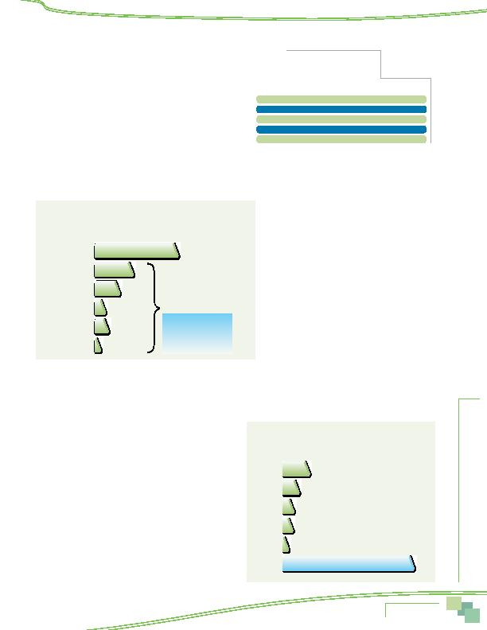

MWCOG-Comm
uter Conn
ecti
on
s-- 2010 State o
f th
e Comm
ute Report
6 5
Distance to Alternative Mode Meeting Point
As shown in Table 39, most access trips to alternative mode meet-
ings points were short. Respondents traveled an average of 2.6 miles
to the meeting point. Six in ten (60%) respondents traveled one mile
or less; these were primarily bus and Metrorail riders. About three in
ten (28%) respondents said they traveled between two and five miles.
Only 12% of respondents traveled more than five miles.
MODE SHIFTS AND TRIAL USE OF MODES
Modes Used Before Starting Current Alternative Modes
Respondents who used an alternative mode and said they had used that mode three years or less were asked what modes they
previously used. About 15% said they did not have a previous mode to report because they had not been working or commuting in
the Washington metropolitan area then or had used only this mode. The remaining respondents reported their previous modes, as
shown in Figure 60.
Of those who had a previous mode, more than half
(53%) of current alternative mode users made a shift
from driving alone. The remaining 47% shifted from a
different alternative mode. Two in ten alternative mode
users shifted from train and 14% previously used a bus.
Four percent carpooled or vanpooled before switching
to their current alternative mode and six percent previ-
ously rode a bicycle or walked. One percent shifted from
telecommuting.
The inset box in the figure shows the share of previ-
ous drive alone use for current alternative mode users.
Train riders were more likely than were other mode
users to have shifted from driving alone; 70% of train
riders said they were driving alone before starting to
use this mode, compared with only 52% of carpoolers,
43% of bus riders, and 31% of walkers/bikers.
Alternative Modes Tried
Respondents who did not work at home full-time were asked about use of alternative modes in the past two years. Respondents
who were driving alone at the time of the survey were asked if they had used or tried an alternative mode for their commute.
Respondents who were using an alternative mode when the survey was conducted were asked if they had used another alternative
mode, other than the mode they were currently using.
In the two years prior to the survey, almost a quarter (23%) of
commuters used or tried another type of non-drive alone mode that
they were not using at the time of the survey (Figure 61). This was
a higher percentage than was observed in the 2007 survey (14%),
but about the same as the percentages who said they tried other
alternative modes in the 2004 (22%) and 2001 (24%) surveys. It
also is consistent with the higher overall use of alternative modes
reported in 2010 than in 2007.
About 13% of commuters tried or used Metrorail in the past
two years and seven percent tried or used a bus. Four percent tried
or used bike or walk. Three percent tried carpool or vanpool, and
one percent tried commuter rail.
Table 39
Distance Traveled from Home
to Alternative Mode Meeting Point
(n = 1,189)
Distance
Percentage
1 mile or less
60%
2 to 3 miles
17%
4 to 5 miles
11%
6 to 10 miles
9%
11 miles or more
3%
Figure 60
Previous Mode of Current Alternative Mode Users
(multiple responses permitted)
53%
23%
14%
4%
6%
1%
47% previous alternative mode
Previous Mode
Drive Alone
Train
Bus
Carpool/Vanpool
Bike/Walk
Telecommute
Shifted from Driving Alone
Train riders 70%
Carpoolers 52%
Bus riders 43%
Walkers/bikers 31%
Figure 61
Alternative Modes Used/Tried in Past Two Years
(multiple responses permitted)
13%
7%
4%
3%
1%
77%
Metrorail
Bus
Bike/Walk
Carpool
Commuter
Rail
No Other
Mode
Commute Patterns